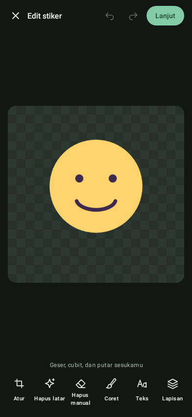

Sedikit edit,
banyak karakter.
Atur posisi, crop, tambah teks, atau coret sesukamu. Semua terasa akrab dalam satu editor.
Foto lucu, GIF favorit, atau video singkat.
Jadikan stiker yang terasa kamu banget.

Alat yang kamu butuhkan,
tanpa bikin prosesnya terasa panjang.
Atur posisi, crop, tambah teks, atau coret sesukamu. Semua terasa akrab dalam satu editor.
Pilih GIF atau video. Tambah teks dan coretan, lalu simpan jadi stiker bergerak.
Paket baru tersimpan privat di perangkat. Publikasikan hanya saat kamu ingin orang lain ikut memakainya.
Ambil foto, GIF, atau video dari galeri. Cukup satu tombol untuk mulai.
Rapikan potongan, tambah kata, atau gambar sesuatu. Buat terasa lebih personal.
Simpan dalam paket, lalu tambahkan ke WhatsApp ketika paketmu siap.
Privat, publik, dan semua pilihan di antaranya.
Tidak. Mengedit dan menyimpan paket privat dilakukan di perangkat. Fitur publik memakai identitas instalasi otomatis, tanpa akun login.
Tidak. Paket baru bersifat privat. Konten baru dikirim ke layanan stickerio ketika kamu memilih untuk memublikasikannya. Hapus latar otomatis memakai ML Kit; praktik SDK dijelaskan di Privacy Policy.
Bisa. Impor GIF atau video, pilih durasinya, lalu tambahkan teks atau coretan melalui editor yang sama. Hasil stiker bergerak tidak menyertakan suara.
Koleksi lokal dan identitas instalasi dapat hilang. Akses pengelolaan paket publik lama tidak dapat dipulihkan otomatis. Simpan salinan media penting sebelum menghapus data atau mencopot aplikasi.
Dari kanvas pertama sampai paket siap dibagikan.
Ketuk gambar untuk melihat lebih besar.
Informasi penerbit dan kontak publik akan ditambahkan di sini.
Belum tersediaAplikasi Android · tautan unduhan akan ditambahkan.